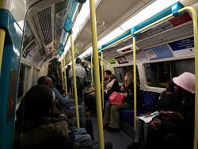

London Underground
The Tube
Useful Information
|  |
| Image: inside the tube. |
| Location: | London |
| Open: |
All year daily. [2007] |
| Fee: |
we recommend day tickets. [2007] |
| Classification: |
 Underground Railway Underground Railway
|
| Light: | electric. |
| Dimension: | |
| Guided tours: | |
| Photography: | |
| Accessibility: | |
| Bibliography: | |
| Address: |
TfL Customer Relations, Floor 23, Empress State Building, Empress Approach, London SW6 1TR, Tel: 020-7222-5600.
E-mail: London Underground Customer Service Centre, 55 Broadway, London SW1H 0BD, Tel: 0845-330-9880. E-mail: |
| As far as we know this information was accurate when it was published (see years in brackets), but may have changed since then. Please check rates and details directly with the companies in question if you need more recent info. |
|
History
 |
| Image: Bank station. |
| 10-JAN-1863 | public service of the Metropolitan Railway started. | |
| 1870 | Tower Subway opened. | |
| 1884 | inner circle completed. | |
| 2015 | scheduled completion of the upgrade of the four major lines. |
Description
 |
| Image: train entering Embankment station. |
The London Underground is the first public underground transport system of the world. It was created with the first line, between Paddington and Farringdon, in 1863. It was a sort of inner city, partially underground, broad-gauge railroad. But there were many difficulties in operating steam locomotives inside a tunnel. Nevertheless the costruction was continued and by 1884 the inner circle, todays Circle Line, was completed.
 |
| Image: Embankment station. |
The main technical difficulty of building railroads in a city were the lack of space, which was solved by building underground. The next problem was the stability of the tunnels, but new developments in deep-level tunnel design allowed stable tunnels to be constructed deep underground using tunnelling shields. The world's first underground tube railway was opened in 1870, the Tower Subway beneath the River Thames south of Tower Hill.
At this time the technology to build tunnels was still restricted, and the most stable tunnels were circular. The trains were built to fit this tube-like tunnels, and soon the underground was called The Tube by the public.
Today the London Underground is an all electric railway system that covers much of the conurbation of Greater London and some neighbouring areas. A dozen lines covere an area inhabited by almost 6 Million people. They also connect the city with Heathrow Airport.
The biggest upgrade since 1863 is going to take place during the next decade. All trains on the four major lines will be replaced by new air-conditioned cars until 2015.
 |
| London Underground Gallery |
- See also
 Search Google for "London Underground"
Search Google for "London Underground" London Underground - Wikipedia, the free encyclopedia
London Underground - Wikipedia, the free encyclopedia London Underground homepage - Transport for London,
official website.
London Underground homepage - Transport for London,
official website.- London Underground Map
- London Underground History - Disused Stations on London's Underground
- London Underground Railway Society (LURS)